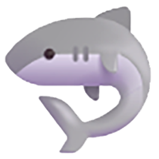

Tap the station you are running. You will pick a player and enter her scores there. Green means every player has been scored at that station.
Every player's converted 1 to 10 rating per station, with her average across completed stations.
Scores live on this device only in this preview. Export before closing so nothing is lost.